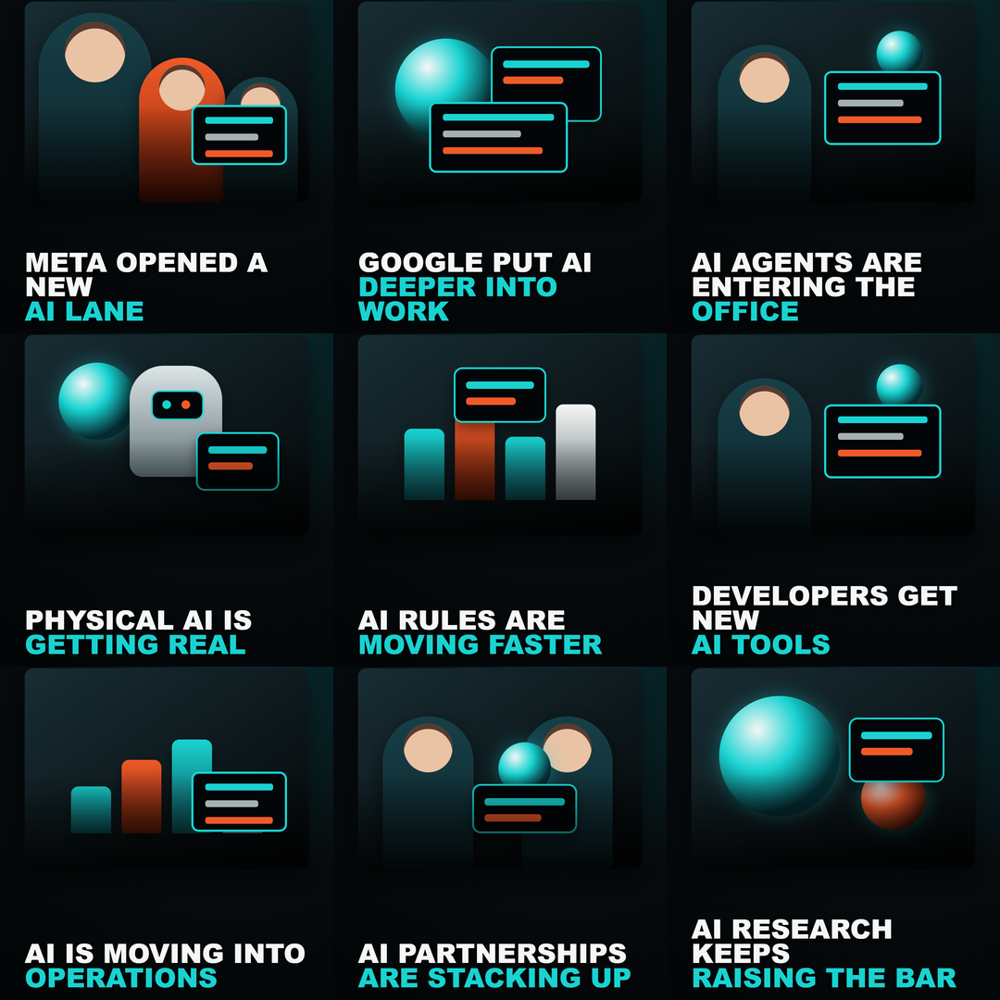
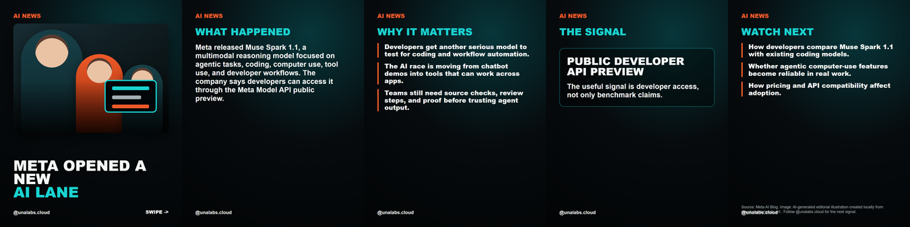
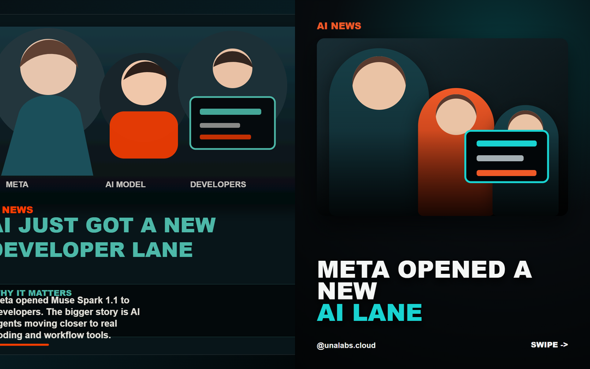

Prototype demo
Una Labs AI News System
Static proof page for the local renderer. This page uses committed preview images only. It does not call OpenAI, Instagram, LinkedIn, or any paid API.
Nine-Post Grid Preview

Meta Muse Spark Carousel

Before And After
